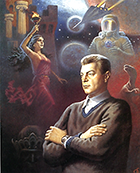
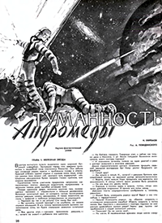
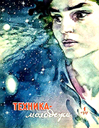
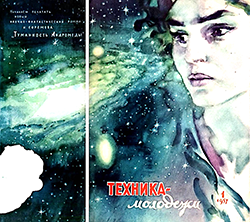
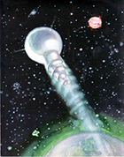

5 января – начало публикации «Туманности Андромеды» И. Ефремова
Иван Антонович Ефремов (1908—1972) — русский советский писатель-фантаст, учёный-палеонтолог, философ-космист. Социально-философский научно-фантастический роман «Туманность Андромеды» был написан в 1955-1956, издан впервые в первом номере журнала «Техника — молодёжи» в 1957 (опубликован полностью в №№ 1-9), в виде книги впервые опубликован в издательстве ЦК ВЛКСМ «Молодая Гвардия» в 1958 (165 000 экз.). Многократно переиздавался, переведён на десятки языков мира. Это классическая коммунистическая утопия о далёком будущем, квинтэссенция социальных и философских размышлений Ефремова, масштабное и беспрецедентное явление в советской литературе. Роман оказал огромное влияние на развитие отечественной фантастики и, по сути, обеспечил её первый расцвет в 1960-х годах ХХ века.

Будущее, описанное в книге, коммунистическое — без частной собственности, рынка и профессиональных органов власти. Земля представляет собой единый мир, с высокоразвитым и интеллектуальным обществом, необычайным развитием науки и искусства, покорением космоса, искусственным улучшением земного ландшафта и климата, изменением психологии человека. Несколько сюжетных линий призваны показать человека будущего во всём разнообразии его интересов.

Из технических предвидений в романе можно отметить: трехмерное телевидение с параболическим вогнутым экраном, геостационарный спутник, который всегда находится над одной точкой земной поверхности, и экзокостюм («прыгающий скелет»), который позволяет людям преодолевать повышенное гравитационное притяжение. А вот очередной проект перевода всей письменности на электронную основу рассматривался, но, по мнению героев книги, должен был быть отвергнут из-за избыточной сложности аппаратов чтения; поэтому, несмотря на прогресс электроники, книги традиционного вида и ручная запись сохранялись.
Под влиянием «Туманности Андромеды» братья А. и Б. Стругацкие написали свою утопию – «Полдень, XXII век». А сам Ефремов стал прототипом Фёдора Симеоновича Киврина в повести братьев Стругацких «Понедельник начинается в субботу».
Существует не подкрепленное фактами мнение (из серии легенд о русских Харламове и Давыдове, создателях супер- мотоцикла Харлей-Дэвидсон), что Джордж Лукас назвал Дарта Вейдера, одного из главных персонажей своей саги «Звёздные войны», в честь ефремовского Дар Ветра. Позитивный советский Дар Ветер превратился в воплощённое зло, но такова могла быть дань холодной войне.

